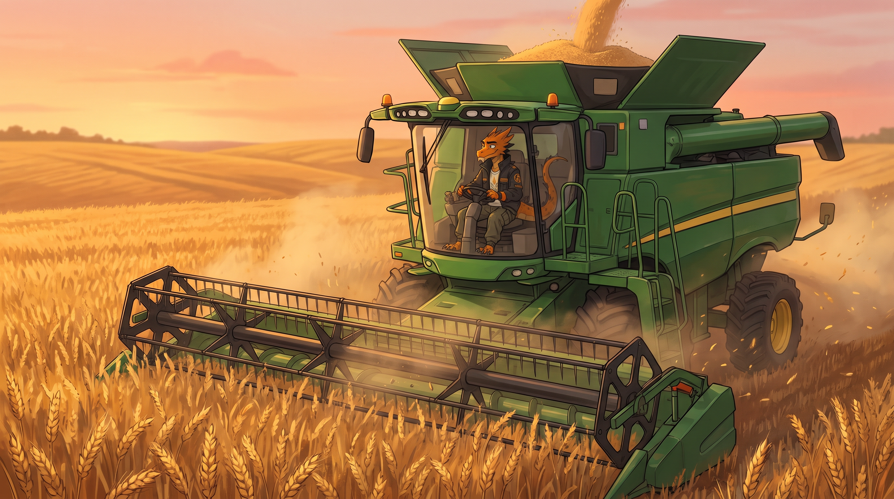
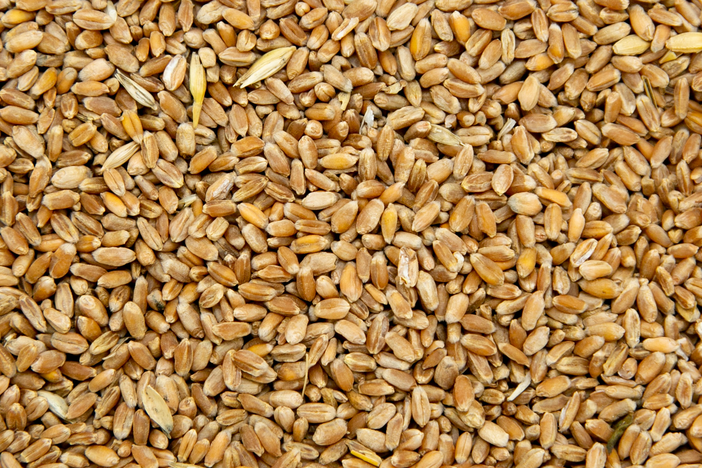
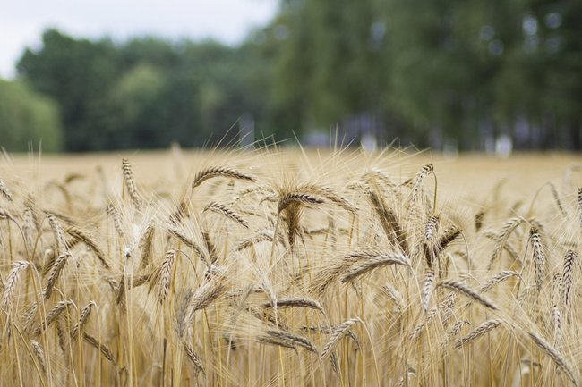

СЕЛЕКЦИОННАЯ ПРОГРАММА
"ПШЕНИЦА"
Описание программы "Пшеница"
Среди сельскохозяйственных культур пшеница занимает первое место в мире как по площади посевов, так и по объёму собираемого зерна. Её ключевая роль — обеспечение производства муки, без которой невозможно изготовление хлеба, макарон и кондитерских изделий. Дополнительно пшеница даёт сырьё для круп, зелёный корм (из специальных сортов) и солому для кормления животных. Трудно переоценить её значение в глобальном питании: три четверти человечества регулярно употребляют продукты из пшеничного зерна.

Направления селекции:
- Улучшение качества зерна и муки озимых сортов
- Короткостебельность
- Устойчивость к гербицидам
- Высокое содержание антиоксидантов
- Увеличение стекловидности твердых сортов пшеницы
